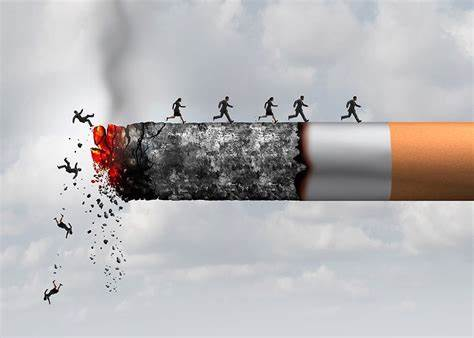

La mportancia de Recoleccion
Como recolectarlas
Gestion y Recoleccion
Nosotros
Recoleccion de filtros de cigarros

"Un fltro menos, un futuro mas"
La recoleccion de filtros de cigarro es un pequeño acto que puede tener un gran impacto en nuestro planeta